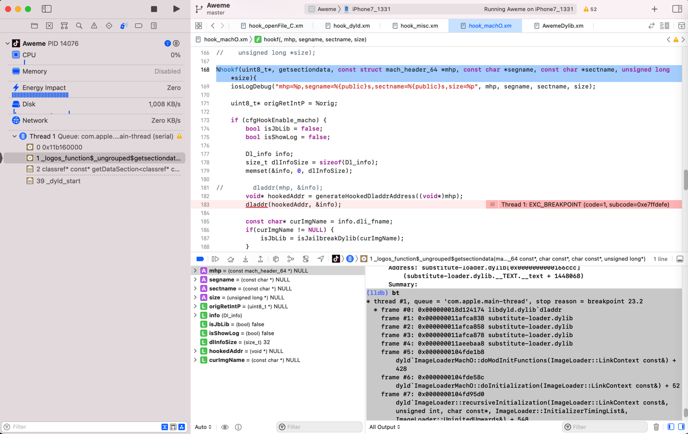

hook代码的断点
此处整理，Xcode中，对于（用iOSOpenDev等工具去写）hook代码时，加的断点方面的常见问题和相关经验心得。
给当前行加断点却看不到
Xcode中的汇编代码加断点后，默认改行左边会显示蓝色底色，表示加了断点了：
比如：

但是，当给，调试时函数调用堆栈中，上层某层函数的汇编代码的下一行将要执行的汇编代码，去加断点时，结果：
点击了左边的空白处，但是：没有出现（表示断点添加成功的）蓝色底色：

以为是：没有成功（给该行汇编代码）加上断点
其实就是没有成功添加断点，且
- 是无法给该行（断点时，上层某函数的，将要执行的下一行汇编代码）加上断点的
- 因此：此时右键该行左边空白处，是看不到=无法出现右键菜单的
- 对比：其他普通已经加上断点的地方出现的，右键是可以出现，编辑断点、删除断点等功能的右键菜单的
- 因此：此时右键该行左边空白处，是看不到=无法出现右键菜单的
xm源码中无法看到和添加断点
- 问题
在Xcode从13.1升级到13.2.1后，之前已用Logos写了很多hook代码，比如youtubeDylib.xm，且其中给hook代码加了很多断点，但是此处发现：

断点都看不到了，所以点击右键也没反应
原因：Xcode的版本升级，把之前安装的
Logos语法高亮的插件覆盖没了，导致语法高亮失效，断点也看不到解决办法：让Xcode识别xm文件，即可显示和操作断点
- 具体步骤
Xcode中安装Logos语法高亮的插件：
https://github.com/brendonjkding/Logos-Xcode11.git
效果：正常情况下，切换到Logos后，语法高亮就正常了：
xm文件中的%orig、%hook等正常的高亮显示了，且断点也正常显示和操作
注：如果偶尔会遇到其他的：Logos语法高亮有问题，或者是xm断点不显示了，则关闭文件后重新打开，多试试几次，估计就可以了。至少暂时是这样。
给函数加hook代码的同时加函数名断点会导致EXC_BREAKPOINT的崩溃
iOS逆向期间，之前遇到一些次数的特殊情况：
对于某个函数，如果去加上了hook代码之后，额外再加上该函数的函数名的断点，则往往就会导致崩溃：
dladdr
之前给dladdr加了hook：

然后也给了dladdr函数名加了断点：

结果调试期间，getsectiondata中调用dladdr的地方，就崩溃了：
Thread 1: EXC_BREAKPOINT (code=1, subcode=0xe7ffdefe)

后来去，禁用了dladdr的断点：
就不会出现之前的崩溃了。
_dyld_register_func_for_add_image
之前已给_dyld_register_func_for_add_image加了hook代码：
%hookf(void, _dyld_register_func_for_add_image, void (*func)(const struct mach_header* mh, intptr_t vmaddr_slide)){
// iosLogInfo("%sfunc=%p -> Omitted", HOOK_PREFIX(cfgHookEnable_dyld), func);
iosLogInfo("%sfunc=%p", HOOK_PREFIX(cfgHookEnable_dyld), func);
//#ifndef XCODE_DEBUG
%orig;
// %orig(func);
//#endif
}
且也同时给函数名：
_dyld_register_func_for_add_image
加了断点：

然后调试后，就会出现：
%hookf(void, _dyld_register_func_for_add_image, void (*func)(const struct mach_header* mh, intptr_t vmaddr_slide)){
...
%orig;
...
其中的%orig去运行，就会崩溃：
Thread 1: EXC_BREAKPOINT (code=1, subcode=0xe7ffdefe)
而去掉（此处是禁用）断点后：
崩溃问题就消失了。
触发到xm源码中函数断点但是显示音频文件图标
- 问题
此处遇到一个奇怪问题：
Xcode中iOSOpenDev的logos插件代码.xm文件中，给（NSXPCConnection的resume）函数写了hook代码，且加上了断点，去调试，结果：
虽然是触发了断点，但是却显示出了音频文件图标，而不是.xm源码的断点的地方

- 另：此处已经确认文件类型设置无误
- 已点击Xcode右上角的文件类型
Type，已经设置xm是Objective-C++ Source- 而不是默认的音频文件类型了。
- 已点击Xcode右上角的文件类型
但是不知道此处为何调试触发断点时，显示的是音频文件图标。
- 原因：经过调试研究确认，基本上确认是，Xcode的偶发性的bug而已。
- 解决办法：重启Xcode
- 即可正常触发断点，Xcode界面跳转到Logos的hook代码处
- 即可正常触发断点，Xcode界面跳转到Logos的hook代码处